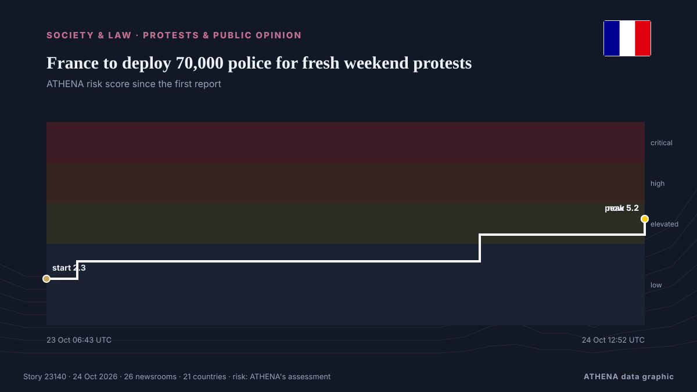

France to deploy 70,000 police for fresh weekend protests

France will deploy about 70,000 police nationwide as it braces for new protests on Saturday after some of the worst urban violence in years erupted on the sidelines of demonstrations a week ago. из Dawn
Независимые источники: 26 изданий в 21 стране, с 21 окт.; первым сообщил CGTN (World); освещение продолжает расти. ATHENA оценивает риск как повышенный (5.6/10), прежде всего из-за тяжести описываемого ущерба и темпа освещения. Уверенность — 91 % (высокая); подтверждают независимые источники: 26 изданий, средняя надёжность источников — 75 %.
Почему это важно: Правовые и политические изменения меняют права, обязанности и государственные услуги для затронутых людей.
Что изменилось: 27 новых сообщений от 24 редакций за 24 часа до 24 окт..
Первый заголовок: France to deploy 70,000 police ahead of weekend protests
Заголовки приводятся на английском языке, как они были опубликованы.
Коротко в цифрах
Отобрано, оценено и написано по опубликованной методологии ATHENA. Ни один редактор не вмешивается в отдельные события. Как это создаётся ›
| 21 Oct 01:27 UTC | 1 |
|---|---|
| 21 Oct 04:27 UTC | 0 |
| 21 Oct 07:27 UTC | 0 |
| 21 Oct 10:27 UTC | 0 |
| 21 Oct 13:27 UTC | 0 |
| 21 Oct 16:27 UTC | 0 |
| 21 Oct 19:27 UTC | 0 |
| 21 Oct 22:27 UTC | 0 |
| 22 Oct 01:27 UTC | 0 |
| 22 Oct 04:27 UTC | 0 |
| 22 Oct 07:27 UTC | 0 |
| 22 Oct 10:27 UTC | 0 |
| 22 Oct 13:27 UTC | 0 |
| 22 Oct 16:27 UTC | 0 |
| 22 Oct 19:27 UTC | 0 |
| 22 Oct 22:27 UTC | 0 |
| 23 Oct 01:27 UTC | 0 |
| 23 Oct 04:27 UTC | 0 |
| 23 Oct 07:27 UTC | 1 |
| 23 Oct 10:27 UTC | 4 |
| 23 Oct 13:27 UTC | 5 |
| 23 Oct 16:27 UTC | 2 |
| 23 Oct 19:27 UTC | 2 |
| 23 Oct 22:27 UTC | 0 |
| 24 Oct 01:27 UTC | 2 |
| 24 Oct 04:27 UTC | 3 |
| 24 Oct 07:27 UTC | 4 |
| 24 Oct 10:27 UTC | 7 |
| 23 Oct 06:43 UTC | 2.3 |
|---|---|
| 23 Oct 08:16 UTC | 3.1 |
| 24 Oct 04:34 UTC | 4.5 |
| 24 Oct 12:52 UTC | 5.2 |
| 24 Oct 12:52 UTC | 5.6 |
Откуда эти цифры
Значимость
Риск
Уверенность
Освещение — кто сообщил и когда
заголовок в оригинале · открывает источник- CGTN (World) · Китай · ChinaFrance to deploy military forces for next protests
- Anadolu Agency (English) · Турция · TurkeyFrance to deploy police trainees as security measures tighten ahead of Saturday protests
- The Rio Times · Бразилия · BrazilFrance Deploys 70,000 Police for Protests
- Anadolu Agency (English) · Турция · TurkeyFrance vows ‘extremely firm’ response ahead of Saturday protests, deploys 70,000 security personnel
- RFI English · Франция · FranceFrance mobilises 70,000 police and gendarmes for Saturday protests
- Vanguard · Нигерия · NigeriaFrance to deploy 70,000 police ahead of new protests
- NDTV · Индия · IndiaFrance To Deploy 70,000 Cops Nationwide Ahead Of Weekend Protests
- Breaking Belize News · Белиз · BelizeInternational News: France prepares to deploy 70,000 police ahead of new protests
- The Guardian · Великобритания · United KingdomFrance to deploy 70,000 police on Saturday to prevent civil unrest
- The New Arab · INTFrance to deploy 70,000 police ahead of new protests
- The Korea Times · Республика Корея · South KoreaFrance to deploy 70,000 police ahead of new protests
- Punch · Нигерия · NigeriaFrance to deploy 70,000 police ahead of new protests
- The Daily Star — page reader · Бангладеш · BangladeshFrance to deploy 70,000 police as students urge further protests
- Hespress English · Марокко · MoroccoFrance to deploy 70,000 police as students urge further protests
- DW English · Германия · GermanyFrance to deploy 70,000 police officers ahead of protests
- The Straits Times · Сингапур · SingaporeFrance to deploy 70,000 police over fresh weekend protests
- BBC News · Великобритания · United KingdomFrance prepares for day of protest a week after nationwide riots
- Dawn · Пакистан · PakistanFrance to deploy 70,000 police for fresh weekend protests
- DW English · Германия · GermanyFrance protests: More violence feared amid renewed demonstrations
- Khaama Press · Афганистан · AfghanistanFrance to Deploy 70,000 Police Officers Ahead of Protests Amid Unrest Fears
- Anadolu Agency (English) · Турция · TurkeyFrance faces new wave of nationwide protests
- to vima · Греция · GreeceParis Braces for Second Day of Nationwide Protests
- RTÉ News · Ирландия · IrelandClashes in France as hundreds of thousands protest
- Channels TV · Нигерия · Nigeria[UPDATED] France Deploys 70,000 Police For Fresh Weekend Protests
- Politico Europe · Бельгия · BelgiumTensions flare up across France as marches come to an end
- Indian Express · Индия · IndiaFrance protests turn violent: 400,000 take to streets in Paris, other cities; clashes erupt
- CBC News · Канада · CanadaTens of thousands march in France as protests continue over schools and living costs
- Channels TV · Нигерия · NigeriaSeen And Heard At France Protests Today, As Police Arrest 135 People
- The New York Times (World) · Соединенные Штаты · United StatesFrance Protest Updates: Hundreds of Thousands March Amid Heavy Security
- Bangkok Post — page reader · Таиланд · ThailandSeen and heard at protests in France
- Bangkok Post — page reader · Таиланд · ThailandSecurity high as France braces for new protests